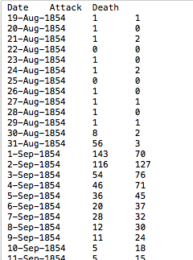

Data
The data utilized was chosen by the professor of the course, Dr. Andy Johnson.
It included data on the date and location of cholera outbreak deaths and attacks, and data on the population of the UK at the time, and comparative statistics to cholera deaths in Naples.
For the application, I created bar charts and pie charts using the ggplot library once the data was processed into R Studio.
